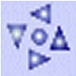
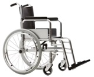
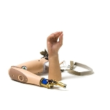
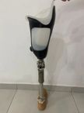

Cadeira de Rodas que facilitam o deslocamento independente ou por ajuda de pessoas próximas,

Uso de Proteses artificiais em substituição de partes do corpo perdidas, como braços e pernas, restaurando a funcionalidade.

